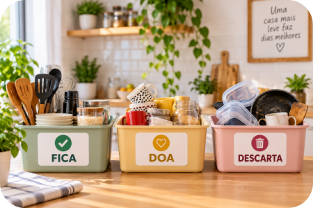
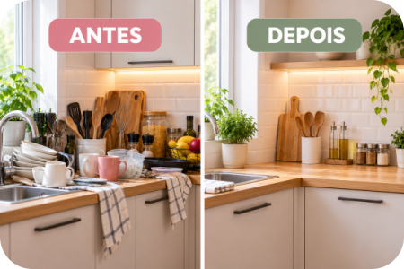
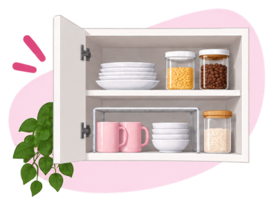
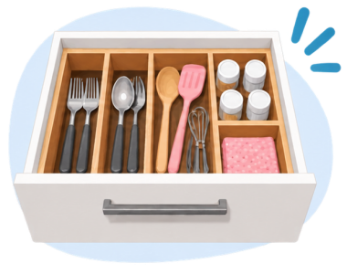
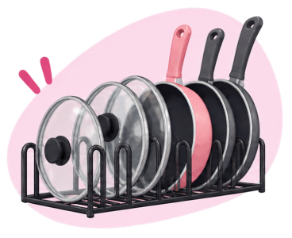

Cozinha pequena não precisa ser sinônimo de bancada cheia e armários onde nunca cabe mais nada.
Antes de comprar potes, cestos ou organizadores, vale fazer uma coisa bem mais simples: olhar para o espaço que você já tem e descobrir o que realmente está atrapalhando.
Às vezes, pequenas mudanças na forma de guardar os objetos deixam a cozinha muito mais prática — sem reforma e sem gastar muito.

1. Comece pelo que você já tem
Antes de procurar mais espaço, faça uma triagem.
Veja o que realmente usa, o que está repetido, o que pode ser doado e o que já não tem utilidade. Potes sem tampa, utensílios quebrados e objetos esquecidos ocupam um espaço precioso em uma cozinha pequena.
A primeira organização pode custar exatamente R$ 0.
2. Deixe a bancada respirar
Quanto menor a cozinha, mais diferença faz uma bancada livre.
Deixe à mão os aparelhos e utensílios usados todos os dias. Aquilo que você utiliza apenas ocasionalmente pode ficar guardado.
Além de facilitar o preparo das refeições, uma bancada menos carregada deixa o ambiente visualmente mais leve.

3. Organize pela frequência de uso
Uma regra simples pode facilitar bastante a rotina:
Usa todos os dias? Fácil acesso.
Usa com frequência? Prateleiras intermediárias.
Usa raramente? Partes mais altas ou menos acessíveis.
Assim você não precisa retirar várias coisas para alcançar justamente aquilo que usa o tempo todo.
Dica da Lu: antes de comprar qualquer organizador, descubra primeiro qual problema precisa resolver.
4. Aproveite a altura dos armários
Em muitos armários sobra espaço entre uma prateleira e outra.
Prateleiras internas de encaixe, divisórias e alguns tipos de cestos podem ajudar a aproveitar melhor essa altura.
Mas existe uma regra importante: não compre o organizador primeiro para depois procurar onde colocá-lo. Primeiro descubra qual problema precisa resolver.
5. Resolva o drama dos potes, tampas e panelas 😂
Quase toda cozinha tem aquele armário que parece ter vida própria: você abre a porta e alguma tampa tenta fugir. 😂
Comece verificando se os recipientes ainda possuem suas respectivas tampas. Depois, agrupe-os por tamanho ou formato.
Tampas podem ficar separadas e organizadas verticalmente, enquanto panelas e formas podem ser distribuídas de maneira que as peças mais usadas permaneçam acessíveis.
Para guardar alimentos, utilize recipientes adequados, limpos e devidamente fechados.
6. Organize os mantimentos para enxergar o que já tem
Uma despensa cheia não ajuda muito quando você não consegue saber o que existe nela.
Agrupar itens semelhantes — massas, grãos, enlatados, temperos, café e outros mantimentos — facilita encontrar o que precisa e perceber o que está acabando antes da próxima compra.
Também vale observar periodicamente as datas de validade e deixar os itens que vencem primeiro mais acessíveis.
Importante: produtos de limpeza devem permanecer separados dos alimentos.
7. Só depois pense em comprar
Antes de sair comprando cestos, potes e divisórias, pare e pergunte: qual problema eu ainda preciso resolver?
Talvez falte aproveitar uma prateleira alta. Talvez sejam as tampas. Talvez a gaveta esteja sem divisão.
Quando o problema está claro, fica muito mais fácil escolher uma solução que realmente faça sentido para sua cozinha.
Escolhas da Lu
Qual problema você quer resolver? Veja opções e compare o que realmente combina com o espaço e a necessidade da sua cozinha.

Aproveitar melhor os armários Ver opções →
Organizar gavetas Ver opções →
Organizar tampas e panelas Ver opções →Publicidade | Link de afiliado — os produtos, preços e disponibilidade são definidos pelos vendedores e podem mudar. Compare as opções antes de comprar.
Para terminar...
Uma solução simples e adequada ao seu espaço pode ser muito mais útil do que vários organizadores comprados por impulso.
Você não precisa ter uma cozinha de revista. Uma cozinha organizada é aquela em que você encontra o que procura, consegue preparar suas refeições com conforto e sabe onde guardar cada coisa depois.
Comece por um armário, uma gaveta ou pela bancada. Não precisa fazer tudo no mesmo dia.
Pequenas mudanças já podem deixar sua rotina muito mais prática.
Fontes consultadas
IKEA — Como organizar os armários e as gavetas da cozinha — organização de utensílios, gavetas, tampas, panelas e itens de uso cotidiano.
IKEA — Como organizar a despensa — agrupamento de alimentos, recipientes, prateleiras e visualização dos produtos armazenados.
Anvisa — Boas práticas para serviços de alimentação — cuidados com produtos de limpeza e prevenção da contaminação dos alimentos.
Prefeitura de São Paulo — Legislação sanitária — armazenamento de materiais de limpeza e produtos químicos separadamente dos alimentos.